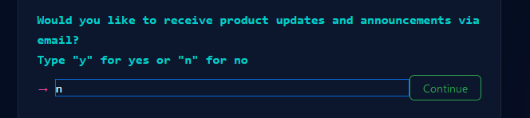
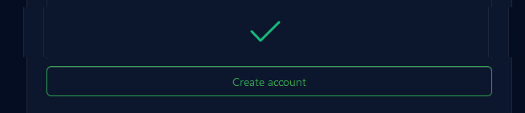
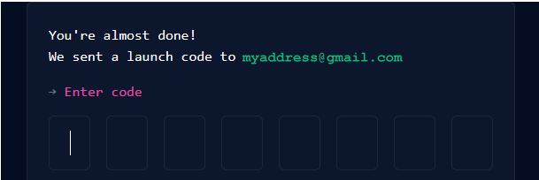
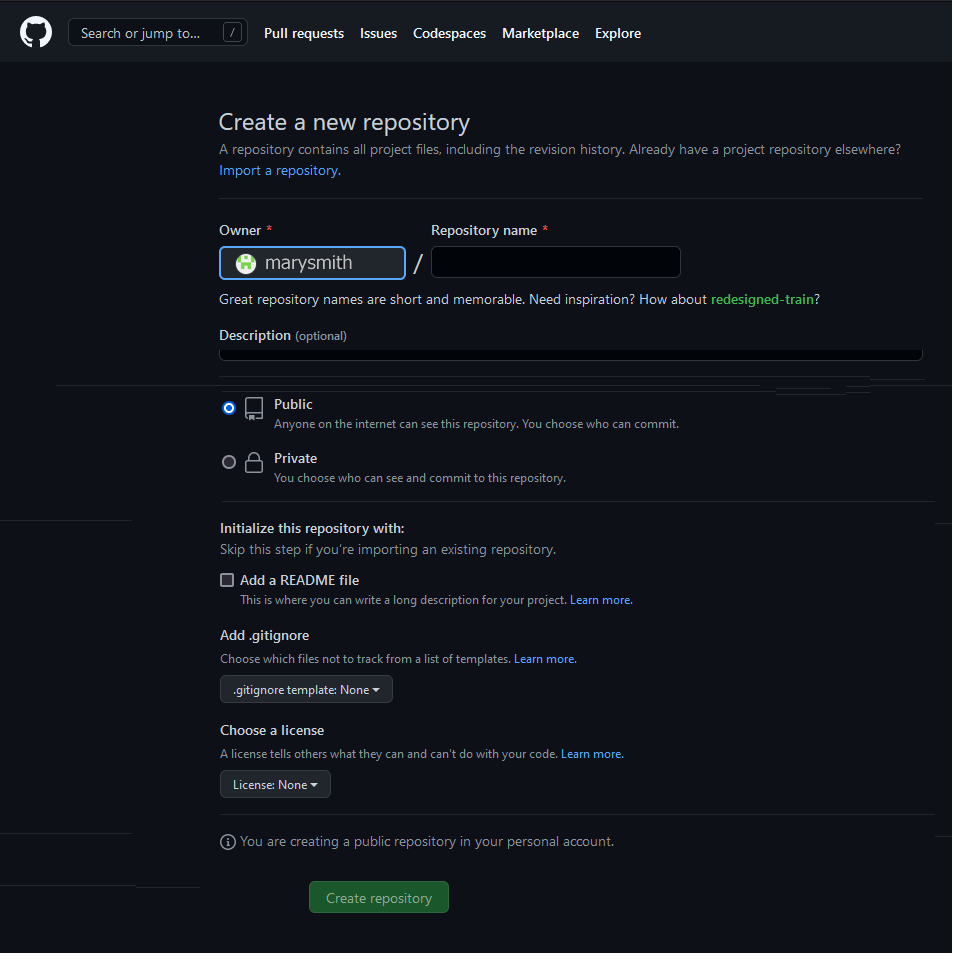

Learning Goals
At the end of this Tutorial, you will be able to:
- Create a free account on the GitHub website.
- Choose a username that will be the first part of your website address.
- Create a project location (called a repository or repo) on GitHub for hosting your website.
- Create a web page directly on GitHub and display it in your web browser.
Some sample developer portfolio accounts
For your inspiration, here are some sample portfolio websites from web designers and developers.
And here are some sample portfolio websites from 2023-24 students.
Github and GitHub Pages
You create websites on your local machine. But you will want your websites to be publicly accessible on a remote server for the world to admire and use.
Consider the two examples below from Airbnb Engineering & Data Science.

This is simply a list of GitHub repos. Typically, these are stored in a default branch named main or master. The GitHub web address looks like this:
https://github.com/username
At this address, you can only view and download files.
In this second example, you can view web pages. You could also run an app created with ReactJS or other JavaScript framework.
GitHub can make this possible with a special branch named gh-pages. The GitHub Pages web address looks like this:
https://username.github.io
In the rest of this Tutorial you will create a GitHub Pages repository to host your web pages.
Your GitHub account: Email and Password
Follow these steps to begin creating your free account on Github.
-
Use your web browser to go to this web address:
https://github.com

- At the top-right of the GitHub home page, choose the Sign up option.
-
When prompted, enter your Email, chosen Password,
and click Continue.

- GitHub asks if you want to receive marketing updates. Enter y or n, and click Continue. 
One more sign-up step remains: you need to enter a Username for your GitHub account.
About your GitHub Username
Your choice of Username for your GitHub account is important. Here's why:
-
Your Username will be the first part of your web address.
See some examples below. The remainder of your GitHub web address
will always be .github.io.

- You will want to promote your website to others by including your web address in emails, on Linkedin and social media platforms, and on perhaps on your curriculum vitae and business cards. So choose a Username that others will find easy-to-remember.
- Typically, you will choose a Username that is similar to your personal or organisation name.
- Enter your Username in lowercase letters and without any spaces. Do not use the underline (_) character.
- Some people and organisations use the hyphen character (-) to separate words in their chosen Username. For example, mary-smith or purple-pixels. Others do not. For example, marysmith or purplepixels. It’s up to you.
- GitHub provides just one GitHub web address for each account. If you want to create several GitHub accounts, you will need to use a different email address for each one.
- The Username you choose need not be the same as your email address. For example, you could create a Username of marygreen with the email of marywhite@gmail.com.
- You can change your GitHub Username later if you wish.
Your GitHub account: Username
After choosing a username for your GitHub account, your next step is to enter it.
-
In the Username field, enter your chosen
Username and click Continue.

-
When you have entered a Username that GitHub accepts, you
are now shown a new screen that asks you to complete an
‘I am a real person’ puzzle.
 Click the Start puzzle to begin.
Click the Start puzzle to begin.
- When finished, click the Create account button. 
Verify your email address to GitHub
Before you can perform any actions on GitHub, such as creating or uploading files, you need to confirm your email address.
GitHub sends a confirmation message to the email address with a code for you to enter to the GitHub Sign up screen..

Choose your GitHub account type
You will be next asked for more information. The highlighted option below is probably the one you want.

Click Continue when finished.
Finally, select the Free option and click the Continue for free button.

✅ That’s it. You have now created your account on GitHub. Well done,
Using GitHub to host your web pages
To host web pages on your GitHub account, you need to create what is called a ‘repository’ with the same Repository Name as your GitHub Username.
Repositories on GitHub are commonly referred to as ‘repos’.
Follow the steps below to set up this repository.
- If you are not signed in to your GitHub account, sign in now.
-
If your GitHub Dashboard screen is not currently displayed, click
the Octocat icon at the top-left of the screen to display it.
 TIP: If ever you find yourself ‘lost’ when
using the various GitHub screens, clicking the
Octocat
icon always brings you back to your GitHub Dashboard.
TIP: If ever you find yourself ‘lost’ when
using the various GitHub screens, clicking the
Octocat
icon always brings you back to your GitHub Dashboard.
-
Near the top-left of the screen, click the New button.

-
GitHub now displays the Create a new repository screen. You
can see an example below.

Notice that your chosen GitHub Username is displayed in the
Owner field.

-
At the right of the Owner field, in the field called
Repository name, enter your chosen Username,
followed by .github.io.
You must enter these EXACTLY. Here is one example.
 And here are some more examples.
And here are some more examples.

-
Next, enter some text in the Description field, as shown in
the example below.

-
Accept the default value of Public so that others will be
able to view your web pages.

-
Select the
Initialize this repository with: / Add a README file
checkbox below.
 This will display your entered Description as
‘placeholder’ text on your GitHub website in a file
named README.md. It also simplifies the remaining steps in
creating your new repository.
This will display your entered Description as
‘placeholder’ text on your GitHub website in a file
named README.md. It also simplifies the remaining steps in
creating your new repository.
-
Finally, click the Create repository button at the bottom
of the screen.

GitHub now displays details of the repository you have created. See the example below.

If you click the GitHub ‘Octocat’ logo at the top-left of the repository details screen, you are returned to your GitHub Dashboard.
There you can see your new repository listed in the column on the left. Clicking the repository name will bring you to the screen containing details of that repository.

To verify that your GitHub account is working correctly:
- Open a new tab or window in your web browser.
- In the web address bar, enter the address of your GitHub website – such as marysmith.github.io.
You should now see a web page similar to the following.

Note that updates to GitHub do not always happen instantly. It may take several minutes for a new web page to appear or an existing one to update.
Note also that there is no 'www' at the beginning of a GitHub web address. See the examples below.